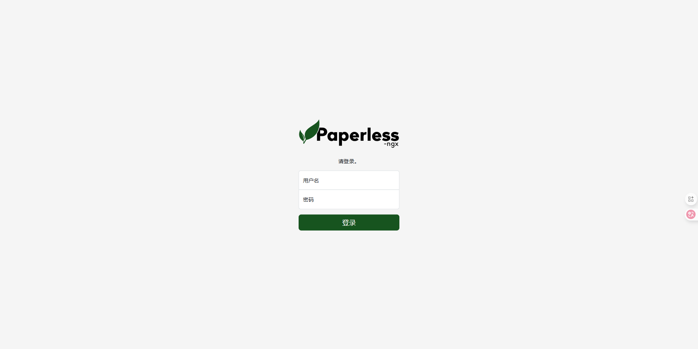
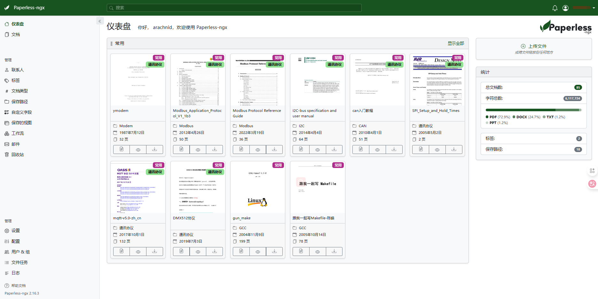
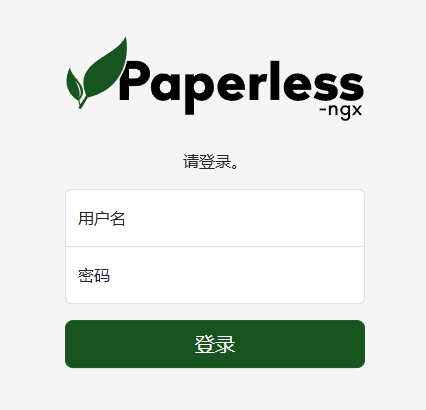
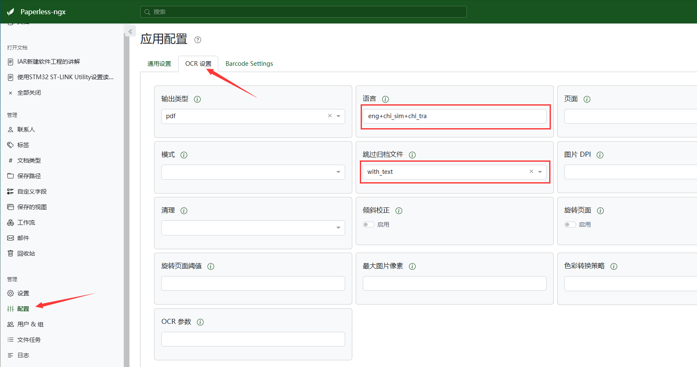
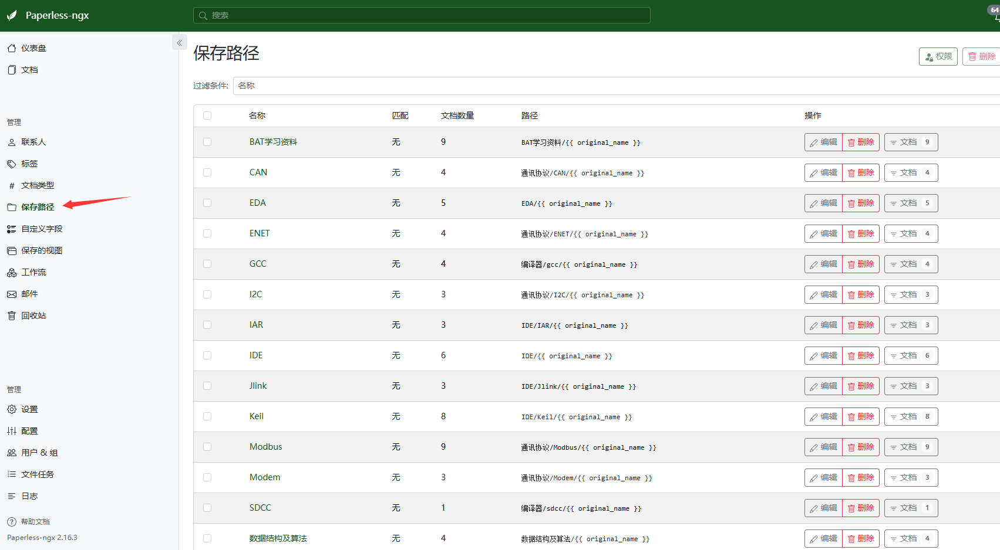
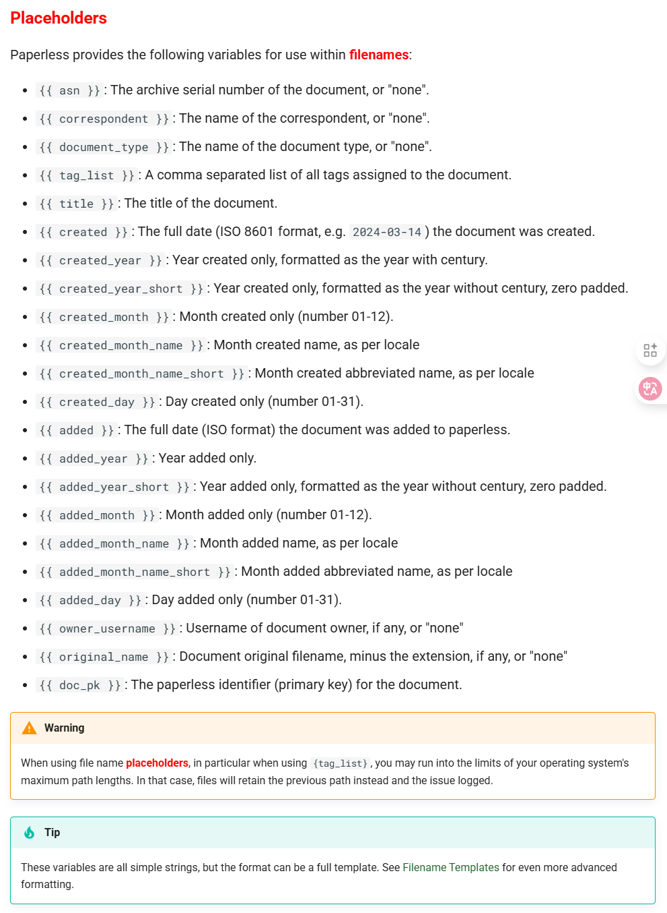
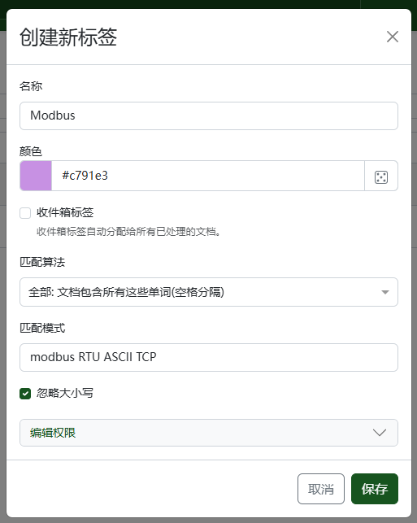
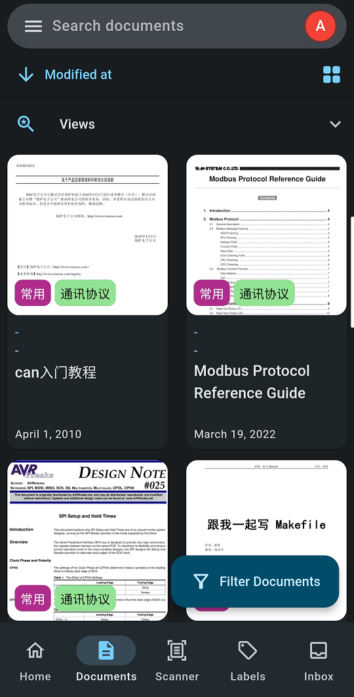
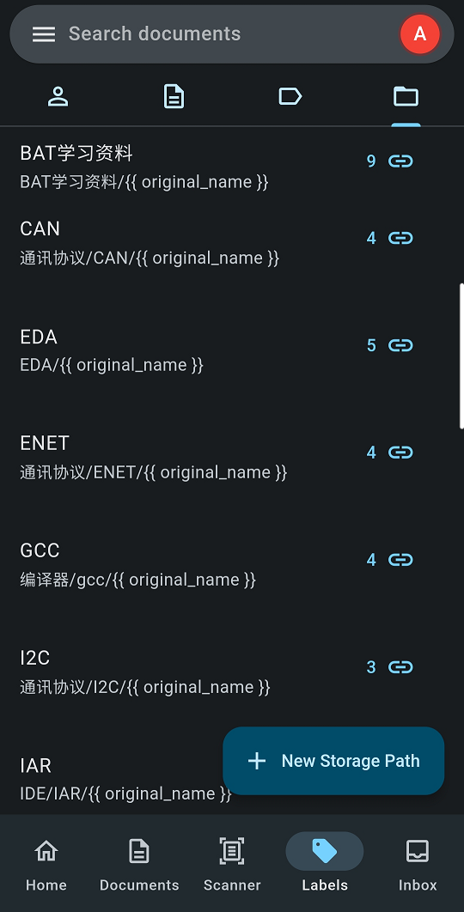

Version：Paperless-ngx 2.16.3

# 介绍
Paperless-ngx 是一个基于 Django 框架的开源文档管理系统。与传统的扫描仪相比，它不仅可以将纸质文件数字化，还支持 OCR（光学字符识别），将文档内容识别为可搜索的文本。
其核心功能包括：
- 文档的组织与索引：通过标签、对应者、类型等多种方式组织扫描文档。
- OCR 文本识别：对文档进行光学字符识别，使包含图像的扫描文档也能搜索和选择文本。
- 多语言支持：利用开源的 Tesseract 引擎，支持 100 多种语言。
- 长期存储格式：文档以 PDF/A 格式保存，设计用于长期存储。
- 智能标签与分类：使用机器学习自动添加标签、对应者和文档类型。
- 广泛的文件支持：支持 PDF 文档、图像、纯文本文件、Office 文档等。
- 定制化的文件管理：Paperless-ngx 管理文件名和文件夹，支持不同的配置。
- 现代化的网页应用：定制仪表板、过滤器、批量编辑、拖放上传、自定义视图、共享链接等。
- 全文搜索：自动完成、相关性排序、高亮显示匹配查询的部分。
- 电子邮件处理：从电子邮件账户导入文档，配置多个账户和规则。
- 多用户权限系统：内置健壮的多用户权限系统。
- 多核系统优化：并行处理多个文档。
官网：https://docs.paperless-ngx.com/

# 安装
创建 paperless-ngx 数据文件夹及文档归类存放位置：
# $PATH 为你的文档归类存放路径 | ||
mkdir -p /app/paperless-ngx | ||
mkdir -p /<$PATH>/export /<$PATH>/consume /<$PATH>/data /<$PATH>/media |
进入到 /app/paperless-ngx 文件夹后，依次创建如下配置所需文件夹：
mkdir redisdata dbdata |
添加 docker-compose.yml 配置文件：
touch docker-compose.yml |
写入：
# docker compose file for running paperless from the Docker Hub. | |
# This file contains everything paperless needs to run. | |
# Paperless supports amd64, arm and arm64 hardware. | |
# | |
# All compose files of paperless configure paperless in the following way: | |
# | |
# - Paperless is (re)started on system boot, if it was running before shutdown. | |
# - Docker volumes for storing data are managed by Docker. | |
# - Folders for importing and exporting files are created in the same directory | |
# as this file and mounted to the correct folders inside the container. | |
# - Paperless listens on port 8000. | |
# | |
# In addition to that, this Docker Compose file adds the following optional | |
# configurations: | |
# | |
# - Instead of SQLite (default), MariaDB is used as the database server. | |
# - Apache Tika and Gotenberg servers are started with paperless and paperless | |
# is configured to use these services. These provide support for consuming | |
# Office documents (Word, Excel, Power Point and their LibreOffice counter- | |
# parts. | |
# | |
# To install and update paperless with this file, do the following: | |
# | |
# - Copy this file as 'docker-compose.yml' and the files 'docker-compose.env' | |
# and '.env' into a folder. | |
# - Run 'docker compose pull'. | |
# - Run 'docker compose up -d'. | |
# | |
# For more extensive installation and update instructions, refer to the | |
# documentation. | |
version: "3.4" # 指定使用的 Docker Compose 文件版本 | |
services: | |
broker: | |
image: library/redis:8 | |
hostname: paperless-broker | |
container_name: paperless-broker | |
restart: unless-stopped | |
volumes: | |
- /home/.app/paperless-ngx/redisdata:/data | |
db: | |
image: library/mariadb:lts | |
hostname: paperless-mariadb | |
container_name: paperless-mariadb | |
restart: unless-stopped | |
volumes: | |
- /home/.app/paperless-ngx/dbdata:/var/lib/mysql | |
environment: | |
MARIADB_HOST: paperless | |
MARIADB_DATABASE: paperless | |
MARIADB_USER: paperless | |
MARIADB_PASSWORD: paperless | |
MARIADB_ROOT_PASSWORD: paperless | |
webserver: | |
image: paperlessngx/paperless-ngx:latest | |
hostname: paperless-ngx | |
container_name: paperless-ngx | |
restart: unless-stopped | |
depends_on: | |
- db | |
- broker | |
- gotenberg | |
- tika | |
ports: | |
- "28030:8000" | |
healthcheck: # 定义健康检查 | |
test: ["CMD", "curl", "-fs", "-S", "--max-time", "2", "http://localhost:8000"] # 使用 curl 命令检查容器内的服务是否健康 | |
interval: 30s # 每 30 秒检查一次 | |
timeout: 10s # 超时时间为 10 秒 | |
retries: 5 # 连续失败 5 次后认为服务不健康 | |
volumes: # 如果不太懂下面路径映射具体作用，可看先下面详细的参数说明 | |
- /srv/dev-disk-by-uuid-c2850abb-0f0a-4770-8408-f4d5f0987175/paperless-ngx/data:/usr/src/paperless/data # 挂载数据 (检索的索引，源码数据库、分类模型等等) 目录，即 PAPERLESS_DATA_DIR 字段 | |
- /srv/dev-disk-by-uuid-c2850abb-0f0a-4770-8408-f4d5f0987175/paperless-ngx/media:/usr/src/paperless/media # 挂载存储文档及缩略图目录，即 PAPERLESS_MEDIA_ROOT 字段 | |
- /srv/dev-disk-by-uuid-c2850abb-0f0a-4770-8408-f4d5f0987175/paperless-ngx/export:/usr/src/paperless/export # 挂载导出目录 | |
- /srv/dev-disk-by-uuid-c2850abb-0f0a-4770-8408-f4d5f0987175/paperless-ngx/import:/usr/src/paperless/consume # 挂载加载导入目录，即 PAPERLESS_CONSUMPTION_DIR 字段 | |
env_file: docker-compose.env | |
environment: | |
PAPERLESS_REDIS: redis://broker:6379 # 配置 Redis 连接信息 | |
PAPERLESS_DBENGINE: mariadb # 选择 mariadb 数据库 | |
PAPERLESS_DBHOST: db # 配置数据库主机地址 | |
PAPERLESS_DBUSER: paperless # only needed if non-default username | |
PAPERLESS_DBPASS: paperless # only needed if non-default password | |
PAPERLESS_DBPORT: 3306 | |
PAPERLESS_TIKA_ENABLED: 1 | |
PAPERLESS_TIKA_GOTENBERG_ENDPOINT: http://gotenberg:3000 # 配置 Gotenberg 服务的地址 | |
PAPERLESS_TIKA_ENDPOINT: http://tika:9998 # 配置 Tika 服务的地址 | |
dns: # 定义 DNS 服务器 | |
- 8.8.8.8 # 使用 Google 的 DNS 服务器 | |
- 114.114.114.114 # 使用中国运营的 DNS 服务器 | |
gotenberg: | |
image: gotenberg/gotenberg:latest | |
hostname: paperless-gotenberg | |
container_name: paperless-gotenberg | |
restart: unless-stopped | |
# The gotenberg chromium route is used to convert .eml files. We do not | |
# want to allow external content like tracking pixels or even javascript. | |
command: | |
- "gotenberg" | |
- "--chromium-disable-javascript=true" | |
- "--chromium-allow-list=file:///tmp/.*" | |
tika: | |
image: apache/tika:latest | |
hostname: paperless-tika | |
container_name: paperless-tika | |
restart: unless-stopped | |
volumes: | |
data: | |
media: | |
dbdata: | |
redisdata: |
根据配置，同样单独添加环境变量文件 docker-compose.env ：
touch docker-compose.env |
写入：
###############################################################################
# Paperless-ngx settings #
###############################################################################
# See http://docs.paperless-ngx.com/configuration/ for all available options.
# The UID and GID of the user used to run paperless in the container. Set this
# to your UID and GID on the host so that you have write access to the
# consumption directory.
USERMAP_UID=0
USERMAP_GID=0
# See the documentation linked above for all options. A few commonly adjusted settings
# are provided below.
# This is required if you will be exposing Paperless-ngx on a public domain
# (if doing so please consider security measures such as reverse proxy)
#PAPERLESS_URL=https://paperless.example.com
# Adjust this key if you plan to make paperless available publicly. It should
# be a very long sequence of random characters. You don't need to remember it.
PAPERLESS_SECRET_KEY=change-me
# Use this variable to set a timezone for the Paperless Docker containers. Defaults to UTC.
PAPERLESS_TIME_ZONE=Asia/Shanghai
# The default language to use for OCR. Set this to the language most of your
# documents are written in.
PAPERLESS_OCR_LANGUAGE=eng
# Additional languages to install for text recognition, separated by a whitespace.
# Note that this is different from PAPERLESS_OCR_LANGUAGE (default=eng), which defines
# the language used for OCR.
# The container installs English, German, Italian, Spanish and French by default.
# See https://packages.debian.org/search?keywords=tesseract-ocr-&searchon=names&suite=buster
# for available languages.
PAPERLESS_OCR_LANGUAGES=chi-sim chi-tra
# Changes the filenames paperless uses to store documents in the media directory. See File name handling for details.
# Default is none, which disables this feature.
PAPERLESS_FILENAME_FORMAT=other/{{ original_name }}
修改完成后，使用以下命令进行部署：
docker-compose up -d |
# 主要参数说明
关于映射路径：
在 docker-compose.yml 文件的 webserver 服务配置中，存在四个路径的映射，
/usr/src/paperless/data：即PAPERLESS_DATA_DIR字段，用于存放数据 (检索的索引，源码数据库、分类模型等等)，如果使用默认的PAPERLESS_LOGGING_DIR字段，那么 log 文件也将PAPERLESS_DATA_DIR/log/路径下存储。具体说明可看：https://docs.paperless-ngx.com/configuration/#PAPERLESS_DATA_DIR/usr/src/paperless/media：即PAPERLESS_MEDIA_ROOT字段，用于存储上传后的文档及提取的缩略文件，后期在面板上的保存路径也是此路径为根目录。具体说明可看：https://docs.paperless-ngx.com/configuration/#PAPERLESS_MEDIA_ROOT/usr/src/paperless/export：如其名，该目录一般用于导出现有的文档所指向的存储路径，可以使用document_exporter命令执行。具体说明可看：https://docs.paperless-ngx.com/administration/#exporter/usr/src/paperless/consume：即PAPERLESS_CONSUMPTION_DIR字段，用于批量加载导入现有的文档，如果你有大量的需要上传分析的文档，只需把这些文档统统放到目录下即可自动帮你处理归档，值得注意的是该目录下不能解析子目录，只处理当前的一级目录，并不会递归处理底下的子目录。具体说明可看：https://docs.paperless-ngx.com/configuration/#PAPERLESS_CONSUMPTION_DIR
关于环境变量：
PAPERLESS_OCR_LANGUAGE：该字段是用于设置文档在解析的时候所调用的 OCR 语言，默认是使用eng，一般来说这是一个使用 3 个字符的代码，所支持的语言可看：languages Tesseract supports ；当然它也可以是多语言，可以使用+符号来组合，eg：deu+eng；值得注意的是，如果使用多语言组合，需要在PAPERLESS_OCR_LANGUAGES字段中添加对应的语言，或者在部署后手动安装对应的语言，如何手动安装可看：Installing additional language packs 。另外，若如果你的语言包含一个-字符，如chi-sim中文简体，你必须使用chi_sim。具体说明可看：https://docs.paperless-ngx.com/configuration/#PAPERLESS_OCR_LANGUAGEPAPERLESS_OCR_LANGUAGES：用于安装其它的 OCR 语言。 默认情况下，无需安装的语言有英语、德语、意大利语、西班牙语和法语。 如果你需要的语言不在列表中，请使用此配置选项安装所需的语言。 你需要找到正确的 LangCodes，但需要注意的是，tesseract-ocr-* package 中的名字并不总是与语言代码相对应，例如，chi_tra应指定为chi-tra。而对于使用安装多个语言时，必须利用 space 分离 。具体说明可看：https://docs.paperless-ngx.com/configuration/#PAPERLESS_OCR_LANGUAGESPAPERLESS_FILENAME_FORMAT：该项用于调整你的文档存储结构及文件命名；如果你想以不同的方式命名并分类存储所上传的文档，那么你可以通过参数调整该属性，当然，你也可以后续通过面板设置的保存路径中重新调整路径结构及命名方式。在这里的other/{{ original_name }}参数，拆解出来就是以原始命名的方式存储在$PAPERLESS_MEDIA_ROOT/other/路径下，eg：PAPERLESS_MEDIA_ROOT的映射路径为/mnt/sda1/documents/上传一份名为paperless.pdf的文件，那么它将存储为/mnt/sda1/documents/other/paperless.pdf；而对于官方默认的情况下，您最终会在媒体目录中得到/mnt/sda1/documents/0000123.pdf之类的文件。嘛，具体详细的说明可以观看：File name handling ，或者自己尝试验证，这里就不作过多的介绍了。
note：
关于其它功能配置可以参看官方 docker-compose 文件：https://github.com/paperless-ngx/paperless-ngx/tree/dev/docker/compose
关于配置属性字段可以参看官方说明：https://docs.paperless-ngx.com/configuration/
# 使用
进入 paperless-ngx 容器中的 shell 终端：
docker exec -it paperless-ngx /bin/sh |
输入下面的命令创建超级用户：
python3 manage.py createsuperuser |
依次输入：usernameemailpassword
通过浏览器访问 http://localhost:2430 ，输入刚才设置的账号密码：

# OCR 配置
在 配置 -> OCR 设置 中调整为以下参数：

# 路径管理
在面板上的 保存路径 中，你可以创建不同的存储路径，该路径皆在 PAPERLESS_MEDIA_ROOT 字段的路径下：

同样的，这些路径参数也支持 Placeholders 的属性参数：

# 匹配算法
在 联系人 、 标签 、 保存路径 等管理中，存在匹配算法这一选项，这是用来自动归类，添加到所属联系人、赋予对应的标签或存到指定路径下：

# 安可
关于 App 客户端，可以使用 Paperless Mobile 软件：


主要功能都有，唯一遗憾就是目前还不支持中文，不过英文基本也能看懂，问题不大。
功能特点：
✔️一目了然地查看文档
✔️添加，删除或编辑文档
✔️共享、下载和预览文件
✔️管理和分配标签
✔️扫描并上传文件到无纸化
✔️通过无纸化移动上传其他应用程序中的现有文档
✔️在专用收件箱中轻松处理和管理新文档
✔️使用广泛的过滤条件搜索文档
✔️使用生物特征因子保护您的数据
✔️支持 TLS 互认证（客户端证书）
✔️现代，直观的 UI 根据材料设计 3 规范构建
✔️提供英语，德语，波兰语，法语，加泰罗尼亚语，捷克语和土耳其语，并将提供更多